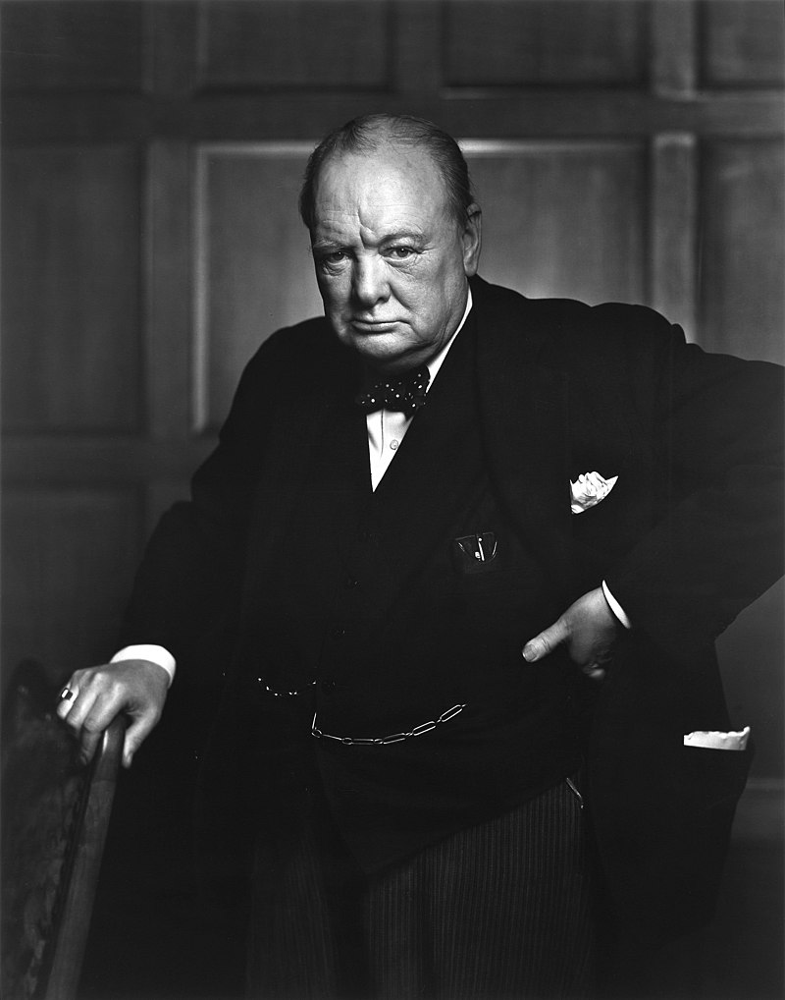

Winston Churchill
Winston Leonard Spencer Churchill fue un político, estadista, historiador y escritor británico, conocido por su liderazgo del Reino Unido durante la Segunda Guerra Mundial.
Es considerado uno de los grandes líderes de tiempos de guerra y fue primer ministro del Reino Unido en dos períodos (1940-45 y 1951-55). Notable estadista y orador, Churchill fue también oficial del Ejército británico, periodista (entre otros encargos, fue corresponsal de guerra en Cuba para The Daily Graphic y, durante la Segunda Guerra Anglo-Bóer, del influyente diario conservador The Morning Post), historiador, escritor y artista. Es el único primer ministro británico galardonado con el Premio Nobel de Literatura (en 1953). También fue nombrado ciudadano honorario de los Estados Unidos de América.
Primeros años
Churchill era hijo de lord Randolph Churchill, tercer hijo del séptimo duque de Marlborough, y de la estadounidense Jennie Jerome, hija del millonario estadounidense Leonard Jerome. Winston Churchill descendía de John Churchill, primer duque de Marlborough, y era primo hermano del noveno duque.
La niñez de Churchill transcurrió en internados escolares, incluyendo el Headmaster's House de Harrow School. Churchill no progresó mucho en Harrow; era castigado por su deficiente trabajo y su falta de dedicación. Tenía una personalidad independiente y rebelde; no logró alcanzar muchos méritos a nivel académico, suspendiendo diversas materias, excepto matemáticas e historia, en las cuales con frecuencia estaba colocado entre los mejores alumnos. Sin embargo, logró ser campeón de esgrima de la escuela.
Carrera militar
Se enlistó en el ejército cuando tenía 21 años como segundo teniente en el 4to Regimiento de Húsares, estacionado en Bangalore, India. Cuando llegó, sufrió un accidente que le dislocó el hombro, lo que le provocó dolores y molestias de por vida.
En la India, la principal ocupación del regimiento era jugar el polo. El equipo tuvo bastantes éxitos, siendo el primer regimiento del sur de la India en ganar la Copa Inter-Regimientos. Churchill también dedicó tiempo a cultivarse; leyó gran cantidad de libros. Declaró que los pastún necesitaban reconocer "la superioridad de la raza" y que aquellos que se resistieran "serían asesinados sin cuartel".
Durante el periodo en el que permaneció en la India, buscó la forma de tomar parte en los principales conflictos coloniales del imperio británico. En 1895 viajó a Cuba, donde observó los combates entre las tropas españolas y los rebeldes. El periódico The Daily Graphic financió su viaje a cambio de que escribiera artículos sobre lo que fuera viendo. Tuvo su primera experiencia en una guerra al verse expuesto al fuego cruzado de ambos bandos el día que cumplía 21 años. Aprovechó este viaje para visitar los Estados Unidos, siendo presentado a la sociedad de Nueva York por uno de los amantes de su madre, Bourke Cockran. En 1897 trató de ir a los Balcanes cuando estalló la guerra entre Turquía y Grecia, que terminó antes de que pudiera llegar.
En Kenia, el comandante de la expedición, Bindon Blood, le prometió a Churchill que podría unirse a su ejército. La campaña contra los pastunes duró solamente seis semanas. Por otra parte, siguió escribiendo artículos para periódicos como The Pioneer y The Daily Telegraph. En octubre de 1897, Churchill regresó a Inglaterra y publicó su primer libro, The Story of the Malakand Field Force, en el que narra sus vivencias durante la campaña.
Trayectoria política
Oficina Ministerial
En 1911 Churchill fue nombrado Primer Lord del Almirantazgo, un puesto que ocuparía durante el inicio de la Primera Guerra Mundial. Como tal, impulsó importantes reformas militares, incluyendo el desarrollo de la aviación naval, tanques y el cambio de combustible de carbón a petróleo. También llevó a cabo masivas obras de ingeniería, asegurándose los derechos sobre los campos petrolíferos de Mesopotamia en 1907, utilizando los servicios secretos británicos a través de la compañía Royal Burmah Oil.
Primera Guerra Mundial (1914-1918)
En 1915, Churchill, como Primer Lord del Almirantazgo, tuvo que enfrentarse con el caso del hundimiento del RMS Lusitania, que generó fuertes controversias. Existen documentos cuyos detalles han señalado, según ciertos historiadores, que el Primer Lord del Almirantazgo podría haber sido negligente al dejar al barco sin escolta, lo que habría propiciado el hundimiento de este navío, con el fin de hacer entrar a Estados Unidos en la guerra. Sin embargo, otros historiadores recelan de esa teoría, puesto que una entrada prematura de Estados Unidos habría privado a los británicos de los convoyes de aquel país. Estos serían suspendidos durante cierto tiempo, ya que los estadounidenses no habían desarrollado lo suficiente su industria de guerra como para poder hacer frente al mismo tiempo a las necesidades británicas y a las suyas en el año 1915.
Otro caso similar ocurrió en 1939, con el hundimiento del transatlántico Athenia torpedeado por el submarino alemán U-30. El hundimiento del Athenia fue presentado en los medios aliados como un acto de guerra total, dirigido contra los civiles. Winston Churchill, nuevamente Primer Lord del Almirantazgo, resaltó al día siguiente que la tragedia podía tener un «efecto beneficioso en la opinión pública estadounidense», la misma opinión en que incurrió con el caso del RMS Lusitania en 1915.
El desarrollo de un tanque de batalla fue financiado con fondos originalmente dirigidos a la investigación naval, y si bien, una década después, el desarrollo del tanque fue considerado como una obra genial, en aquella época se vio como un desvío ilegal de fondos. El tanque fue utilizado en 1915 pero no en una forma eficiente, ni como lo había ideado Churchill, es decir, una flota de tanques que tomara por sorpresa a los alemanes, abriendo largas secciones de trincheras aplastando las defensas de alambre de púas.
Por otra parte, también fue uno de los dirigentes que, en contra de las opiniones del almirante John Arbuthnot Fisher, planificaron e impulsaron el desastroso desembarco de Galípoli en los Dardanelos durante la Primera Guerra Mundial, el cual le valió, no sin razón, el sobrenombre de «El carnicero de Galípoli».
Cuando el primer ministro Asquith quiso formar un gobierno de coalición entre todos los partidos, los conservadores exigieron su degradación en el gabinete. De esta forma fue como Churchill ocupó un ministerio sin cartera como canciller del ducado de Lancaster, renunciando al gobierno posteriormente. Se reintegró al ejército, si bien seguía siendo miembro del Parlamento y sirvió varios meses en el frente occidental. En aquel entonces su segundo en el mando fue Archibald Sinclair, quien más tarde sería el líder del Partido Liberal.
Regreso al gobierno
En diciembre de 1916, Asquith renunció y fue reemplazado por Lloyd George. Sin embargo, todavía no se consideraba prudente el traer de regreso al gobierno a Churchill. En julio de 1917, Churchill fue nombrado ministro de Armamento. Al finalizar la Primera Guerra Mundial, Churchill ocupaba las carteras de ministro de Guerra y ministro del Aire (1919-1921). Durante este período trató de reducir considerablemente el presupuesto militar. Sin embargo, su principal preocupación fue la intervención de los aliados en la Guerra Civil Rusa. Churchill era fuertemente partidario de ello, indicando que la causa de los bolcheviques debía ser estrangulada en su cuna. Se aseguró el aumento y la prolongación de la participación británica en este conflicto, aun cuando existían serias divergencias en el gabinete y una mayoría opuesta en el Parlamento y en la población.
Período de entreguerras
En 1922 el Partido Liberal estaba sufriendo divisiones internas en medio de unas elecciones generales donde Churchill perdió en el distrito de Dundee. Habiendo sido operado de apendicitis recientemente, declaró que había perdido su asiento en el Parlamento, su puesto en el gobierno y su apéndice al mismo tiempo. En 1923 se volvió a presentar como candidato liberal en el distrito de Leicester, perdiendo nuevamente. Más tarde se fue acercando al Partido Conservador, si bien se autonombró «antisocialista» y «constitucionalista». En las elecciones de 1924 fue elegido en el distrito de Epping como «constitucionalista» con el apoyo del Partido Conservador. Al año siguiente formalmente se unió nuevamente a este partido, comentando que «cualquiera puede cambiar de partido, pero se necesita cierta imaginación para cambiar dos veces».
En 1924 fue nombrado ministro de Hacienda y supervisó el retorno del Reino Unido al patrón oro, lo cual originó deflación, desempleo y una huelga de mineros que degeneró en la huelga general de 1926. Sus decisiones dieron lugar a que el famoso economista John Maynard Keynes opinara que el regreso al patrón o estándar del oro llevaría al mundo a una depresión. Churchill más tarde consideró que esa había sido una de las peores decisiones que había tomado en su vida. En realidad no todo fue culpa de Churchill, considerando que él no era un economista y que actuó siguiendo el consejo del gobernador del Banco de Inglaterra, Montagu Norman, del cual Keynes opinó: «siempre tan encantador, siempre tan errado».
Durante la huelga general de 1926, Churchill editaba el periódico del gobierno British Gazette, y en esta disputa escribió que «o el país rompe la huelga general o la huelga general romperá al país». Es más, la polémica en torno a Churchill se agudizó cuando comentó que el régimen fascista de Benito Mussolini había «rendido un servicio al mundo, pues había enseñado cómo se combaten la fuerzas de la subversión». Consideraba que este régimen había servido como baluarte en contra de la revolución comunista.
El gobierno conservador fue derrotado en las elecciones generales de 1929. Churchill se convirtió en un disidente de su partido en relación a las tarifas de protección arancelarias y la autonomía de la India. Cuando en 1931 Ramsay MacDonald formó el gobierno nacional, Churchill no fue invitado a participar en él. En esta época atravesó el punto más bajo de su carrera, muy en especial cuando, con motivo de la polémica por la relación entre el rey Eduardo VIII y Wallis Simpson, Churchill no siguió la corriente de pedir la abdicación y les defendió a capa y espada (la consecuencia fue que por primera vez en muchos años fue abucheado en la Cámara de los Comunes), en el periodo que se conoce como los «años salvajes». Pasó la mayor parte de su tiempo escribiendo varios libros, entre ellos Marlborough: His Life and Times —una biografía de su ancestro John Churchill, el 1.er duque de Marlborough— y The History of the English Speaking People, esta última obra publicada después de la Segunda Guerra Mundial.
Pronto dirigió su atención hacia Adolf Hitler y el peligro del rearme de la Alemania nazi. Por algún tiempo fue el único que denunció dicho rearme y abogó por la necesidad de fortalecer militarmente a Gran Bretaña. Su principal preocupación fue evitar que Alemania obtuviera la superioridad en la fuerza aérea, que desgraciadamente consiguió en 1938 a pesar de las advertencias de Churchill. En aquellos años alejado de la vida partidista y debido a sus contactos con militares y cargos relevantes de la Administración, llegó a estimar que Alemania estaba gastando 1500 millones de libras al año en armamento, estimación que posteriormente se demostró muy cercana a la realidad. Churchill no pudo más que observar con desaliento y frustración cómo la política de Chamberlain estaba haciendo agotar las únicas posibilidades de evitar una guerra en Europa: frente a las pretensiones de Mussolini en Abisinia el Gobierno británico se mostró firme en advertir a Italia de sus consecuencia apoyado por la Liga de Naciones, pero a la hora de la verdad la Liga de Naciones no impuso ningún tipo de sanciones y, mucho menos, ninguna medida militar. Hitler observó el acontecimiento y Mussolini, el cual recelaba de Hitler por sus pretensiones en Austria, decidió unirse a su causa en contra de las democracias europeas. Hitler a continuación ocuparía el corredor del Rin que años antes Francia había desocupado como gesto de buena voluntad.
Ante la pasividad de Francia y el Reino Unido, Hitler lo intenta en Austria y aunque un primer intento de golpe de Estado para derrotar al canciller austríaco fracasara, por fin en 1938 Hitler consigue la ocupación del país ante la incredulidad de las demás potencias. Hasta ese momento Churchill cree aun posible evitar la guerra: Hitler pone sus ojos en los Sudetes en Checoslovaquia y ante estas pretensiones Rusia propone un acuerdo a Francia y Reino Unido para unirse en contra de Hitler si lo intentara. Esta oferta es desoída por ambas potencias a pesar de las simpatías de Churchill a esta idea, pero Francia cree suficiente el acuerdo con Checoslovaquia de actuar en caso de invasión, y ni Polonia ni Rumanía estaban dispuestas a dejar pasar tropas soviéticas por sus territorios. Chamberlain, en un intento por evitar lo peor, viaja a Múnich y consigue arrancar de Hitler un acuerdo de renunciar a cualquier otra pretensión territorial en Europa a cambio de que el gobierno de Praga reconozca un régimen de autonomía para la región de los Sudetes de mayoría alemana. Chamberlain regresa a Londres exhibiendo el acuerdo y declarando que era el acuerdo de paz para una era. Fue entonces cuando Churchill reprochó a Chamberlain:
"Os dieron a elegir entre el deshonor y la guerra... elegisteis el deshonor y tendréis la guerra.""
Los acontecimientos se precipitaron: el presidente de Checoslovaquia entiende que Francia no acudirá en su ayuda, Polonia y Hungría presentan similares pretensiones territoriales a los alemanes en otras zonas del país. El presidente del Gobierno checoslovaco dimite y el ejército se disuelve, con sus más de treinta divisiones, que habrían contenido un ataque alemán. Rusia toma nota y no ve más salida que un acuerdo con Alemania para garantizar su integridad territorial, ante la inoperancia y falta de consideración de Francia y Reino Unido. Por si fuera poco, Hitler, lejos de renunciar a sus pretensiones territoriales no solo ocupa los Sudetes, sino que pone sus ojos en Polonia. A Chamberlain no le queda más remedio que advertir a Hitler que, si Alemania invade Polonia, el Reino Unido le declararía la guerra. Francia lo secunda. Hitler invade Polonia el 1 de septiembre de 1939 y tres días después, el 3 de septiembre de 1939, pasadas las 11 de la mañana en Londres, Neville Chamberlain anuncia oficialmente que el Reino Unido inicia hostilidades, y la II Guerra Mundial da comienzo en Europa.
Segunda Guerra Mundial (1939-1945)
Al comienzo de la Segunda Guerra Mundial, Churchill fue nombrado Primer Lord del Almirantazgo. Su principal misión es la de fortalecer las bases de Scapa Flow en Escocia e impedir a Alemania que sus navíos atravesaran el Atlántico Norte para atacar a los barcos mercantes de las colonias. El siguiente episodio crítico fue el ataque de Finlandia por parte de la URSS. Los fineses resistieron el primer embate en diciembre de 1939 y Churchill consideró de vital importancia tomar los puertos del norte de Noruega para así suministrar armamento a Finlandia. Su siguiente idea fue tomar los puertos suecos desde donde salían los contingentes de hierro para Alemania. Sin embargo Hitler se anticipa y toma la iniciativa: decide invadir simultáneamente Dinamarca y Noruega, en aquel entonces neutrales, para evitar ser atacadas de inmediato. Churchill decide contraatacar y manda una flotilla a los puertos noruegos tomados por los alemanes sin éxito. El fracaso de la operación en Noruega pone en serios aprietos a Chamberlain, que tras varias sesiones de control en el Parlamento tiene que soportar duras críticas. Churchill, a pesar de los errores de Chamberlain, asume toda la responsabilidad del fracaso pero no es suficiente. Chamberlain presenta su dimisión y el rey propone a Churchill la formación del Gobierno. Forma Gobierno el 11 de mayo de 1940. Dos días después pronuncia su primer discurso como primer ministro ante la Cámara de los Comunes, que es conocido por hacer célebre una frase que tomó de Roosevelt, al decir: «No tengo nada más que ofrecer que sangre, esfuerzo, lágrimas y sudor», en el que mencionó el inicio de la guerra en el Imperio Británico y que solo aceptaría la victoria: victoria a toda costa.
La siguiente crisis a la que tiene que enfrentarse es la batalla de Francia. A finales de mayo de 1940 Hitler decide atacar Holanda, Bélgica y Francia. La primera cae en días, mientras que Francia y Bélgica apenas pueden retener los ataques de los carros blindados alemanes. Por fin, el 25 de mayo de 1940 los alemanes rompen la primera línea de defensa cerca de Sedán. Churchill no parece muy preocupado, pero cuando viaja a París y se entera de que el Gabinete de Guerra francés no tenía preparado un ejército de reserva estratégico teme lo peor. Meses antes una fuerza expedicionaria británica de unos 200 000 hombres ocupaban las defensas francesas al norte de Sedán. Los alemanes avanzan 50 millas al día y se aproximan a Arras. El Gabinete de la Guerra francés propone la idea de que los ejércitos al norte de la brecha alemana se muevan hacia el sur para encontrarse con los alemanes para retenerlos mientras que las divisiones francesas en el centro y sur del país se moverían hacia el norte para atacar a los alemanes por el flanco sur. Sin embargo las divisiones francesas ni siquiera se reorganizan. La fuerza expedicionaria británica se encuentra atrapada en el momento en que los alemanes llegan al mar tomando Boulogne. Conocedores de la prisión en la que se encuentran, comienzan a avanzar hacia el norte para derrotar a los británicos. Churchill acepta la idea de lord Gort, al mando de las fuerzas británicas, de, como último recurso, retroceder a Dunkerque y ser evacuados abandonando todo el equipo. Inmediatamente se dan órdenes de que todos los barcos disponibles en el canal viajen a Dunkerque por si fuera necesario evacuar al ejército británico. Los británicos aun confiaban en contener a los alemanes a la espera de las divisiones francesas pero todo se complica cuando, a los pocos días, los alemanes invaden por completo Bélgica y rompen el frente en Ostende. Los británicos están totalmente rodeados y no les queda más remedio que utilizar el último recurso. A pesar de la humillación los franceses rodeados en Lille atacan a los alemanes para mantenerlos ocupados e impedir que más divisiones ataquen a los ingleses. Hitler decide no mandar a las divisiones alemanas y solamente hostigar a los británicos por el aire. A pesar de que este acto fue interpretado como un intento de Hitler de forzar una posible alianza con Inglaterra, Churchill ofrece otra tesis: las divisiones alemanas habían avanzado demasiado en poco tiempo y necesitaban combustible. Además el hostigamiento aéreo se vio neutralizado porque las bombas causaban escasos daños en la playa arenosa de Dunkerque y porque la RAF comenzó a enfrentarse a los alemanes por aire en este escenario. Más de 250 000 soldados entre británicos, franceses y belgas consiguen ser evacuados en apenas 48 horas. Churchill, aliviado, ve cómo es posible recomponer al ejército británico, no solo para su defensa sino también para volver a liberar Europa.
El 24 de mayo de 1941, después del hundimiento del HMS Hood, Churchill dijo en un discurso: "Hundid al Bismarck". El Bismarck era el acorazado más moderno del mundo y había logrado hundir al Hood en su primera misión después de ser terminado. Fue hundido tres días después, lo que eliminó una peligrosa amenaza para los suministros británicos.
Los soviéticos le pusieron a Churchill el sobrenombre de «el bulldog británico». Esto en parte se debía a la voluntad de Churchill por mantener una posición firme (jamás sería derrotado) y de enfrentarse al peligro visitando los frentes de batalla, mientras que sus dos aliados, Roosevelt y Stalin, no eran dados a estas visitas. Esto significaba que Churchill se acercaba más a las fuerzas alemanas y corría el riesgo de ser asesinado. De hecho, Churchill estuvo a punto de morir, no a manos de sus enemigos, sino por problemas de salud. En diciembre de 1941 sufrió un ligero ataque cardíaco y en diciembre de 1943 cayó enfermo de neumonía.
Después de la guerra, Churchill visitó Stalingrado, aun en ruinas, e hizo una observación a los soviéticos: «es increíble a lo que llegaron los alemanes». El intérprete ruso preguntó si lo decía por el grado de destrucción, a lo que Churchill respondió: «Me refiero a hasta donde llegaron en el mapa».